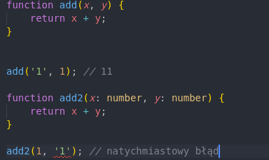

Typescript
Javascript, który się skaluje
by Gracjan Górecki
O mnie
mnie już znacie :PAgenda
- trochę o JS
- typescript dlaczego?
- arsenał TS
Javascript
Zalety- jest wszędzie
- duża liczba bibliotek
- język stron
Javascript
Wady- dynamiczne typowanie
- dużo błędów typu 'is undefined'
- brak modularności
- nieodporny na błędy
Javascript
Wady
var i = 100;
for(var i = 0; i< 2; i++){
}
console.log(i); // jaki będzie wynik?
Javascript
Wady
for(var i = 0; i< 2; i++){
var x = 100;
}
console.log(x); // co się stanie?
{
console.log(y); // co z tym?
var y = 1;
}
console.log(y); // a tutaj?
Typescript na ratunek!
Typescript
- open source
- Microsoft
- https://github.com/Microsoft/TypeScript
jak zacząć
> npm install -g typescript
> tsc index.ts // >>>> index.js
Typescript
- nadzbiór JS
- poprawny kod JS to poprawny Typescript
- "kompilowany" a raczej transpilowany do JS
- działa wszędzie tam gdzie JS
Typescript: omówienie
Typy proste w TS
let imie: string;
let wiek: number;
let czyDziała: boolean;
let data: Date;
let auta: string[];
let akcesoria: string | string[];
let wszystko: any; // jak JS
Dlaczego typy?
Arsenał TS
Klasy
class Animal {
private _name: string;
public get name(): string {
return this._name;
}
public set name(v: string) {
this._name = v;
}
constructor(name: string) {
this.name = name;
}
makeSound(){
console.log(`${this.name} wydał dzwięk`);
}
}
let dog = new Animal('Reksio');
dog.makeSound(); // Reksio wydał dzwięk
Interfejsy
interface AnimalModel {
name: string;
}
interface IAnimal {
makeSound(): void;
getName(): string;
}
Interfejsy w akcji
Enumy
enum Languages{
Typescript,
Javascript,
c_Sharp,
Java
}
let language = Languages.Typescript
console.log(language); // 0
language = Languages.Java
console.log(language); // 3
Generyki
class MyOwnGenericCollection< T >{
collection: T[];
add(item: T) {
this.collection.push(item);
}
get(): T[] {
return this.collection;
}
}
Generyki w akcji
Podsumowanie
Moja następna prezentacja
- może o RUST lang
- może lightning talk o łucznictwie
- może o ...